Planet
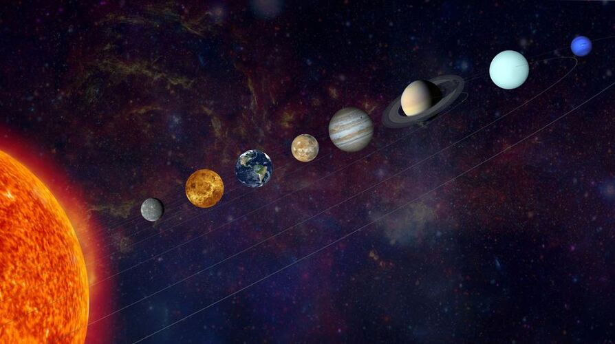Planet adalah benda astronomi yang mengorbit sebuah bintang atau sisa bintang yang cukup besar untuk memiliki gravitasi sendiri, tidak terlalu besar untuk menciptakan fusi termonuklir, dan telah "membersihkan" daerah sekitar orbitnya yang dipenuhi planetesimal. Ada 8 Planet di tata surya kita yaitu Merkurius, Venus, Bumi, Mars, Jupiter, Saturnus, Uranus, dan Neptunus.
Bintang
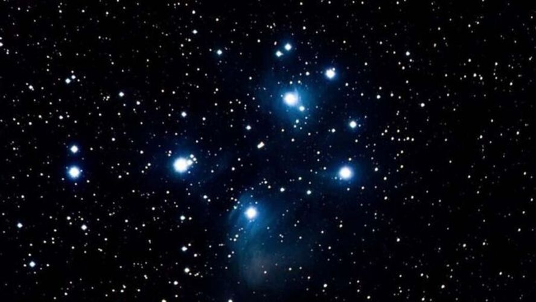Bintang merupakan benda langit yang memancarkan cahaya. Ada dua macam bintang yaitu bintang semu dan bintang nyata. Bintang semu adalah bintang yang tidak menghasilkan cahaya sendiri, tetapi memantulkan cahaya yang diterima dari bintang lain. Bintang nyata adalah bintang yang menghasilkan cahaya sendiri. Secara umum sebutan bintang adalah objek luar angkasa yang menghasilkan cahaya sendiri (bintang nyata). Bintang dapat memancarkan cahaya sendiri,karena adanya proses pembakaran gas di dalamnya. Bintang yang paling dekat dengan Bumi adalah Bintang Proxima Centauri,dengan jarak 4,5 tahun cahaya dan Matahari dengan jarak 150 juta km.
Galaksi
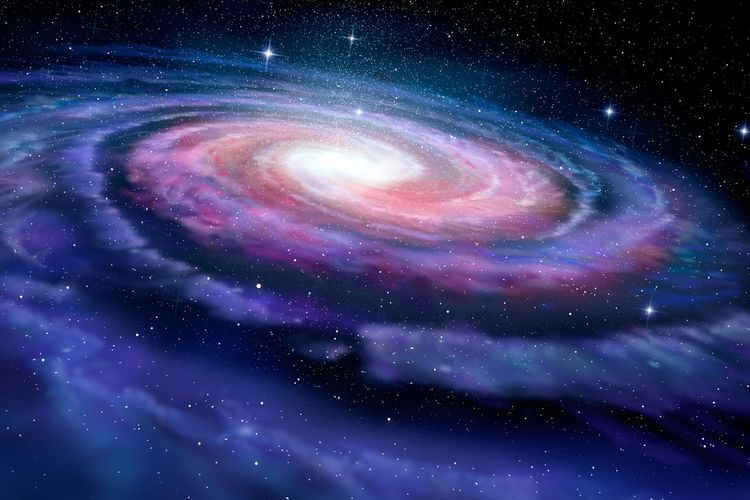Galaksi adalah sebuah sistem yang terikat oleh gaya gravitasi yang terdiri atas bintang (dengan segala bentuk manifestasinya, antara lain bintang neutron dan lubang hitam), gas dan debu kosmik medium antarbintang, dan kemungkinan substansi hipotetis yang dikenal dengan materi gelap. Kata galaksi berasal dari bahasa Yunani,yaitu galaxias,yang berarti seperti susu yang merujuk pada galaksi Bima Sakti(Inggris:Milky Way).
Kemungkinan terdapat lebih dari 100 miliar (1011) galaksi pada alam semesta teramati. Dalam suatu galaksi yang besar atau raksasa,biasanya terdiri dari 1 triliun bintang dan 3 miliar planet,sedangkan dalam galaksi yang kecil biasanya terdapat 10 juta bintang. Sebagian besar galaksi berdiameter 1000 hingga 100.000 parsec dan biasanya dipisahkan oleh jarak yang dihitung dalam jutaan parsec (atau megaparsec). Ruang antar galaksi terisi dengan gas yang memiliki kerapatan massa kurang dari satu atom per meter kubik. Galaksi yang terbesar adalah galaksi Andromeda,sedangkan galaksi kita,Bima Sakti berada pada urutan kedua terbesar.
Nebula
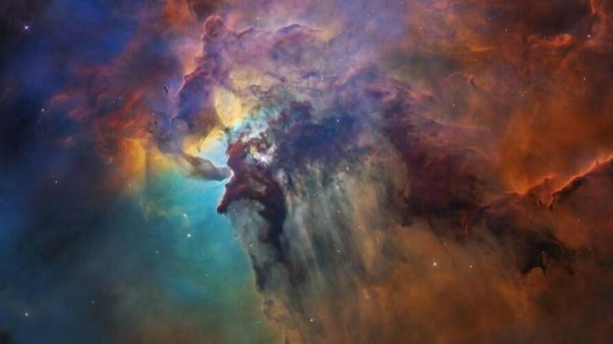Nebula adalah awan antar bintang yang terdiri dari debu, gas, dan plasma. Awalnya nebula adalah nama umum yang diberikan untuk semua objek astronomi yang membentang, termasuk galaksi di luar Bima Sakti (beberapa contoh dari penggunaan lama masih bertahan; sebagai contoh, Galaksi Andromeda kadang-kadang merujuk pada Nebula Andromeda,sebelum Edwin Hubble menemukan galaksinya). Nebula sering disebut tempat lahirnya galaksi dan bintang-bintang. Salah satu contoh nebula adalah Eagle Nebula dan Nebula Omega.
Asteroid
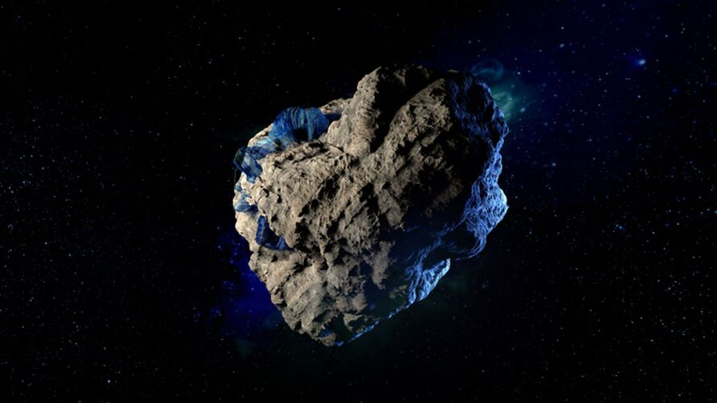Asteroid, pernah disebut sebagai planet minor atau planetoid, adalah benda berukuran lebih kecil daripada planet, tetapi lebih besar daripada meteoroid, umumnya terdapat di bagian dalam Tata Surya (lebih dalam dari orbit planet Neptunus). Asteroid berbeda dengan komet dari penampakan visualnya. Komet menampakkan koma ("ekor") sementara asteroid tidak.
Meteoroid
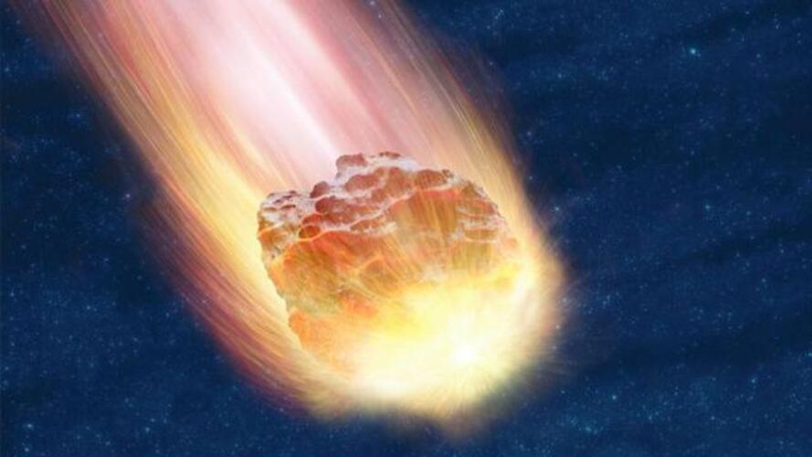Meteoroid adalah benda-benda kecil di tata surya yang ukurannya lebih kecil daripada asteroid tetapi lebih besar daripada sebuah molekul. Persatuan Astronomi Internasional pada sidang umum IX pada 1961 mendefinisikan meteoroid sebagai berikut: Sebuah benda padat yang berada/bergerak dalam ruang antarplanet, dengan ukuran lebih kecil daripada asteroid dan lebih besar daripada sebuah atom atau molekul. Meteoroid yang masuk ke atmosfer bumi disebut meteor. Meteoroid yang sudah mencapai permukaan bumi disebut meteorid.
Sistem Keplanetan
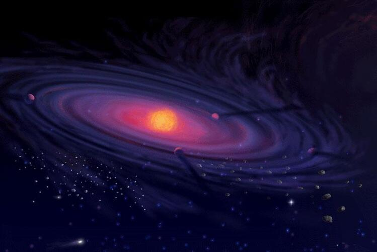Sistem keplanetan terdiri dari berbagai macam objek non-bintang, seperti planet, satelit alami, asteroid, meteoroid, komet, dan debu kosmik, yang mengorbit sebuah bintang. Matahari dan sistem keplanetannya, yang termasuk Bumi di dalamnya, dikenal sebagai Tata Surya.
Komet
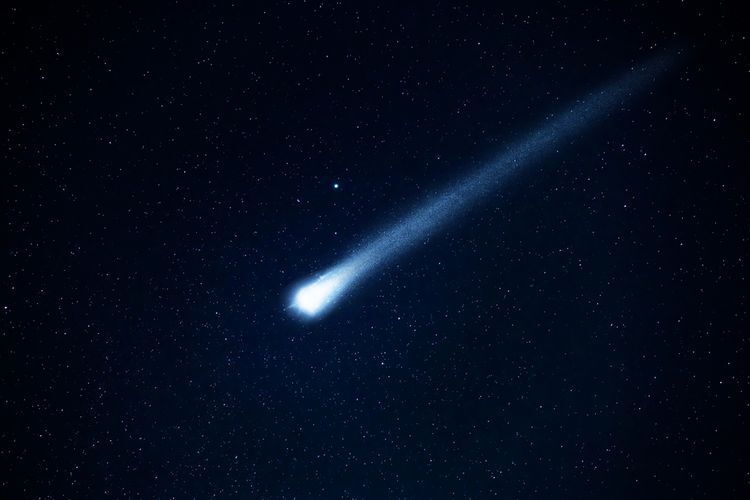Komet adalah benda langit yang mengelilingi matahari dengan garis edar berbentuk lonjong atau parabolis atau hiperbolis. Kata "komet" berasal dari bahasa Yunani, yang berarti "rambut panjang". Istilah lainnya adalah bintang berekor yang tidak tidak tepat karena komet sama sekali bukan bintang. Orang Jawa menyebutnya sebagai lintang kemukus karena memiliki ekor seperti buah kemukus yang telah dikeringkan.
Komet terbentuk dari es dan debu. Komet terdiri dari kumpulan debu dan gas yang membeku pada saat berada jauh dari matahari. Ketika mendekati matahari, sebagian bahan penyusun komet menguap membentuk kepala gas dan ekor. Komet juga mengelilingi matahari, sehingga termasuk dalam sistem tata surya. Salah satu contoh komet adalah komet Halley. Komet Halley muncul di bumi setiap 76 tahun sekali.
Gugus
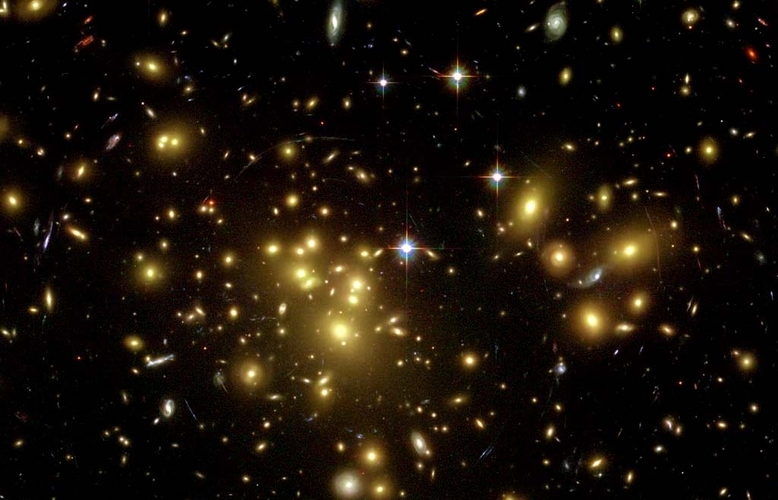Gugus adalah gabungan-gabungan dari galaksi yang membentuk suatu sistem tersendiri. Dalam sebuah gugus biasanya terdapat 10-15 galaksi. Gravitasi di kluster berasal dari gaya gravitasi bersama galaksi-galaksi. Gugus membentuk gugusan-gugusan yang lebih besar bernama supergugus.
Debu Antariksa
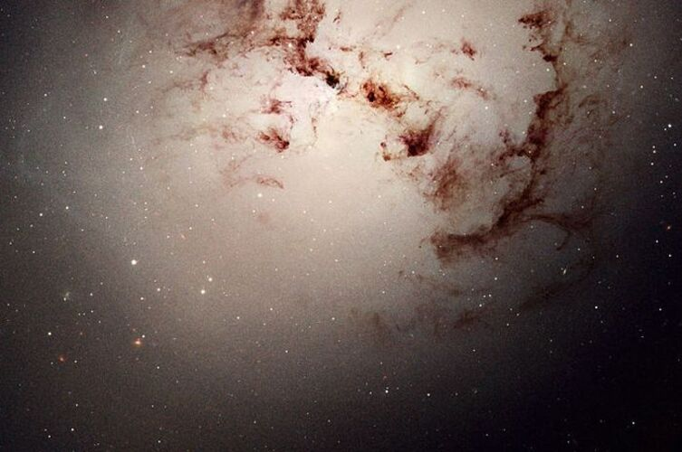Debu antariksa atau debu kosmik adalah debu-debu ataupun pasir yang ada di angkasa lebih tepatnya luar angkasa, yang terbentuk dari sampah-sampah antariksa, seperti satelit-satelit dan benda-benda angkasa lainnya yang hancur.
Lubang Hitam
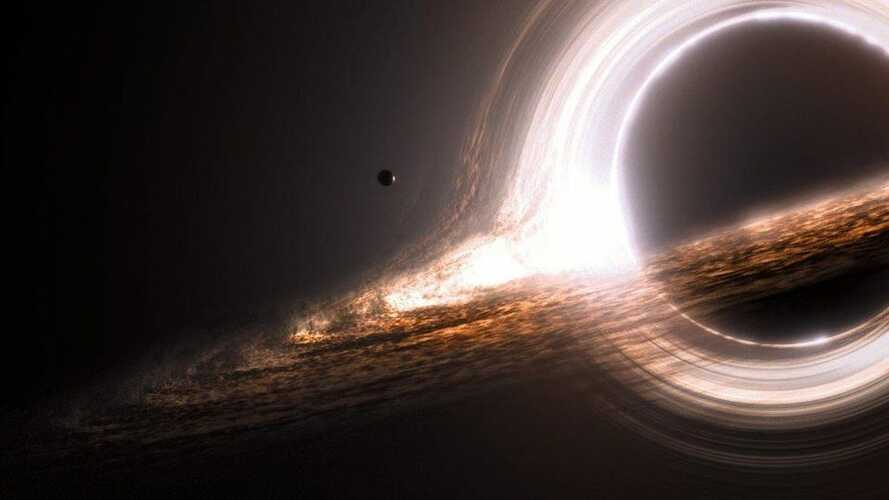Lubang hitam atau blackhole adalah lubang yang berada di luar angkasa yang menghisap benda-benda langit di sekitarnya. Lubang hitam terjadi karena adanya bintang mati. Karena itu lubang hitam sering disebut sebagai kuburan angkasa. Sebelum lubang hitam terjadi,ada ledakan yang disebabkan oleh bintang. Benda-benda langit di sekitar lubang hitam, pasti akan terhisap kedalam lubang hitam. Benda-benda tersebut terhisap kedalam blackhole karena gravitasi blackhole sangatlah besar. Lubang hitam atau blackhole sering disamakan dengan wormhole atau lubang cacing atau juga disebut lubang waktu, padahal sebenarnya blackhole tidak sama dengan wormhole.
Supernova
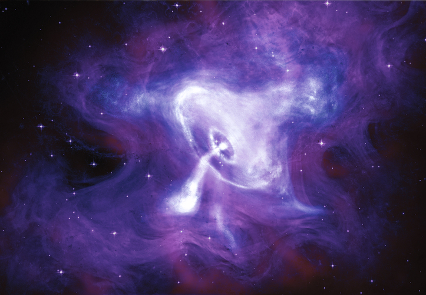Supernova adalah ledakan dari suatu bintang di galaksi yang memancarkan energi lebih banyak dari nova. Pengertian umum supernova adalah: "Berakhirnya riwayat suatu bintang." Pada bintang yang sangat besar,ditandai dengan ledakan karena intinya akan runtuh dan akan merilis sejumlah besar energi. Supernova inilah yang menyebabkan adanya lubang hitam.